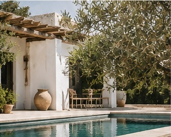
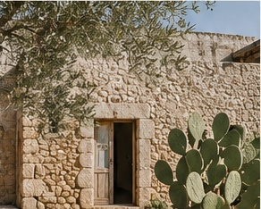
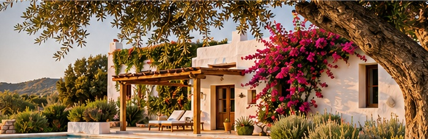
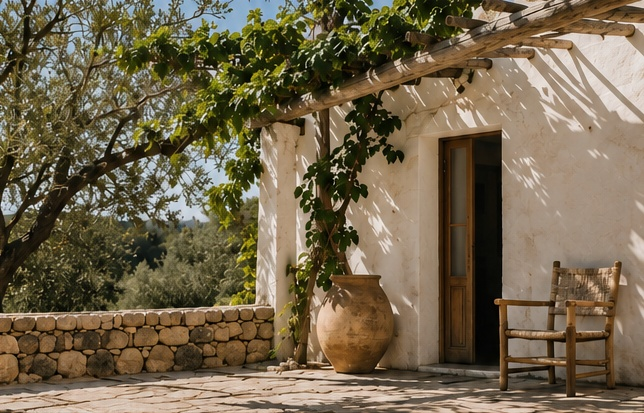

Atzaró Agroturismo
Rural elegance and quiet gardens.
A handpicked edit of countryside fincas, intimate hotels and rural retreats.

Rural elegance and quiet gardens.

Design-led stays in nature.

A small, soulful countryside hideaway.

Understated charm and open landscapes.

A secluded finca with character.

Contemporary comfort, rooted in place.

A peaceful escape among olive groves.

Warm hospitality in rural Ibiza.